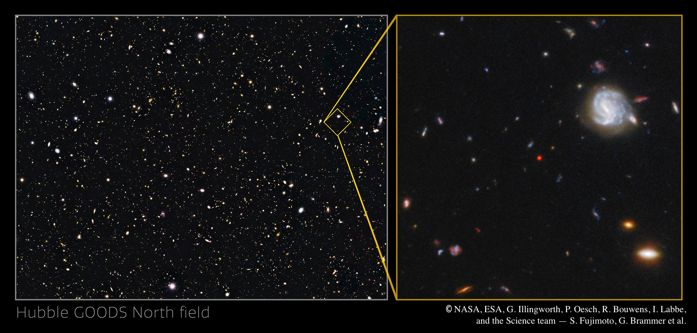

GNz7q was initially discovered as a red, compact source in archival HST data in GOODS-North, resembling the properties now widely discussed in so-called “Little Red Dots (LRDs)", including extreme X-ray faintness, possible super-Eddington accretion, and its remarkable high abundance. Even before JWST, GNz7q stood out as a candidate for a rapidly growing, young black hole in the early universe.
However, GNz7q also exhibits key differences from typical LRDs. Its host galaxy is a vigorously star-forming, massive system, exhibiting the highest star formation rate (SFR ≈ 1600 M☉/yr) among all z > 7 galaxies currently known. Unlike many LRDs which host overmassive BHs for their stellar mass, GNz7q appears to host an undermassive black hole — suggesting we are witnessing a very young black hole rapidly catching up to its massive host.
Our Cycle 3 JWST program targets GNz7q and its surroundings with NIRSpec, MIRI, and NIRCam grism observations. These observations aim to map its black hole growth, host galaxy, and local environment, providing us with the best laboratory to understand the rapid growth mechanisms of the super-massive black holes (SMBHs) in the early universe.
Selected papers (JWST PID 4762 & the discovery paper).